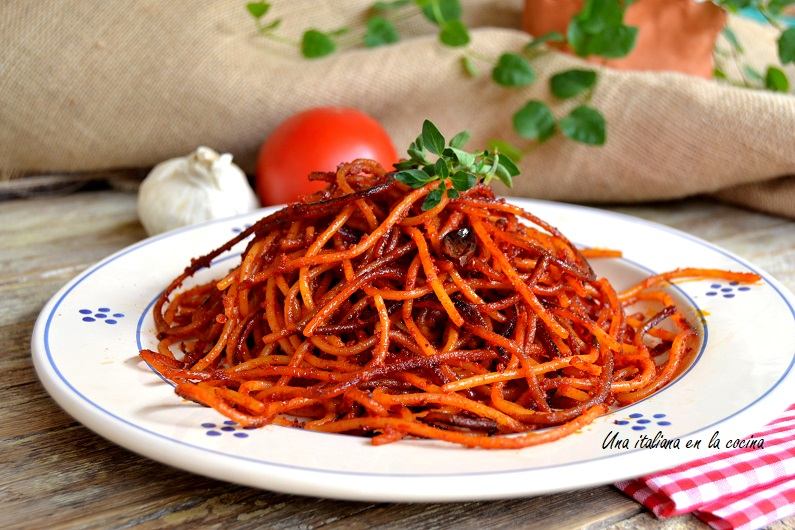
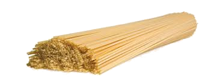
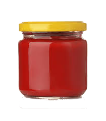
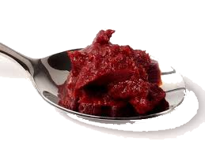
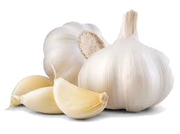
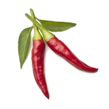
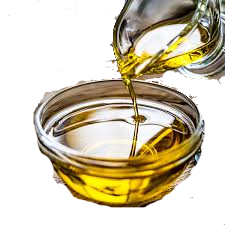

La receta más crujiente y atrevida de la cocina italiana

Tiempo de preparacion 30 minutos
Raciones: 2 personas 🙋♀️🙋♂️
Dificultad: Baja 👌
200 gr Spaghetti Garofalo

300 ml salsa de tomate

cucharada de concentrado de tomate

1 diente de ajo

2 guindillas

Aceite de oliva virgen extra (AOVE)

La receta tradicional se hace con spaghetti, pero también puedes probar con linguine, bucatinio incluso rigatoni te apetece innovar. Eso sí, deben ser pastas secas y firmes. Evita pastas frescas o muy finas, ya que no aguantarán la cocción directa en la sartén y podrían romperse o pasarse antes de tostar.
Depende del gusto y de las guindillas que uses. Con dos guindillas, como en la receta original, el plato tiene un picante medio, que realza el sabor no abrasa. Si prefieres una versión más suave, puedes usar solo una o retirar las semillas. Lo importante es que el picante no oculte la intensidad del tomate.
El nombre significa literalmente “espaguetis a la asesina”. Según la leyenda, la primera vez que alguien los probó dijo que el sabor era tan intenso que era “mortal”. Desde entonces, el nombre quedó para siempre.Más allá de la anécdota, una receta con mucha personalidad, nacida en Bari, que se ha hecho famosa por su técnica única y su carácter atrevido.